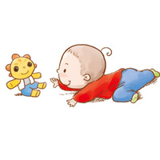

男婴：体重6.9-8.8kg，身长65.1-70.5cm，头围44.32cm，胸围44.06cm。
男婴：体重6.9-8.8kg，身长65.1-70.5cm，头围44.32cm，胸围44.06cm。
女婴：体重6.3-8.1kg，身长63.3-68.6cm，头围43.20cm，胸围42.86cm。
生理发展：
坐时已不太需要支撑，有时会突然往前倒后用双手支撑来取得平衡。
可用一只手去拿东西。
心智发展：
会长时间凝视物品。
会多发出几个单音了。
喜欢看镜子中的自己。
感官与反射：
从平躺翻为侧身时，几乎可将自己弯成坐姿。
可随意转头。
社会发展：
会咯咯笑与大笑。
听到音乐会发出咕噜声，低哼并停止哭泣。